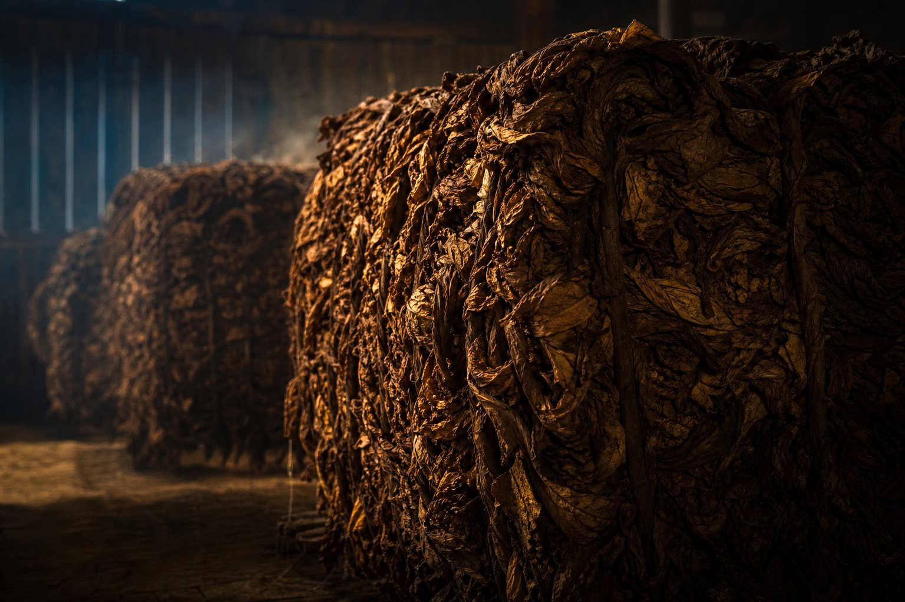
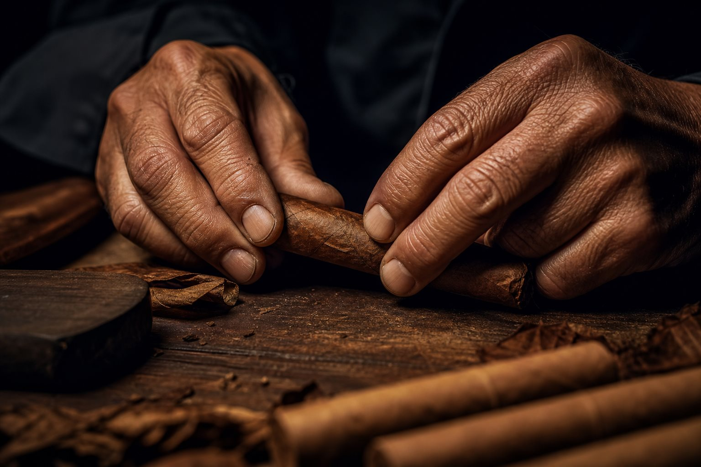

La Hoja
Origen que se puede tocar.
El campo define la identidad. La hoja madura bajo el sol, acumula fuerza y revela su destino en la textura, el color y la elasticidad.
Casa tabacalera dominicana · legado familiar
Cigar SRL · Republica Dominicana
Una casa de tabaco nacida del legado familiar, la fermentación ancestral y la paciencia convertida en arte.
El Tabaco
Una travesía visual desde la montaña dominicana hasta el cigarro terminado: origen, cultivo, fermentación, mano experta, reposo y legado.
El campo define la identidad. La hoja madura bajo el sol, acumula fuerza y revela su destino en la textura, el color y la elasticidad.
Seguir el recorridoLa Historia
Todo comenzó en la región norte de la República Dominicana, donde un antepasado de nuestra familia dedicó su vida al cultivo y procesamiento del tabaco. Con el tiempo, logró dominar los secretos de la fermentación, un conocimiento valioso que transmitió a las siguientes generaciones como parte de un legado construido con esfuerzo, paciencia y pasión.
A través de los años, cada generación aportó su experiencia, preservando las tradiciones y el amor por este noble oficio. Lo que comenzó como una enseñanza familiar se convirtió en una herencia que fortaleció nuestra identidad y nuestro compromiso con la calidad.
Inspirados por ese legado y guiados por el sueño de compartir nuestra pasión con el mundo, nació Cazador de Sueños Cigars.
Hoy, cada cigarro que elaboramos es un homenaje a nuestros antepasados, a nuestra tierra y a los sueños que hicieron posible este camino.
El Proceso
Una travesía visual desde la montaña dominicana hasta el cigarro terminado: origen, cultivo, fermentación, mano experta, reposo y legado.
El campo define la identidad. La hoja madura bajo el sol, acumula fuerza y revela su destino en la textura, el color y la elasticidad.

Bajo presión y calor natural, el tabaco respira. La crudeza se afina, el aroma se ordena y la hoja encuentra equilibrio.

Cada cigarro es una pieza única. La tensión, el ritmo y el corte pertenecen a manos que conocen el punto exacto entre firmeza y respiración.
El reposo pule lo que la mano construyó. En madera, sombra y tiempo, el aroma se vuelve memoria y el carácter alcanza profundidad.
Las Vitolas
Compra por caja o puro suelto. Totales firmados en checkout. Aquí conviven la casa, el origen y la firma sensorial de cada línea.
Tarifas DHL según destino. El costo se calcula en el checkout y forma parte del total que confirma el servidor.
Cajas de 20 puros, excepto El Rango (10). Fotografías reales de cada vitola.
Todos los pedidos son venta final. No se admiten devoluciones ni reembolsos una vez confirmado el pago.
Transferencia bancaria (República Dominicana y envíos desde EE.UU.) o PayPal. Este sitio no pide número de tarjeta.